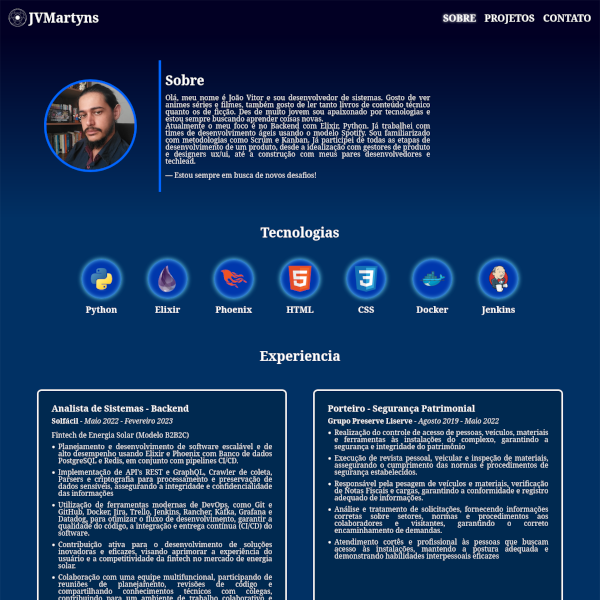
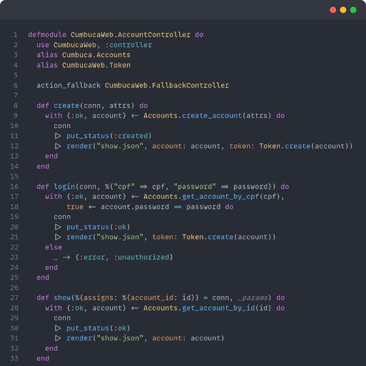

Sobre
Olá, meu nome é João Vitor e sou desenvolvedor de sistemas. Gosto de ver animes séries e filmes,
também gosto de ler tanto livros de conteúdo técnico quanto os de ficção. Des de muito jovem sou
apaixonado por tecnologias e estou sempre buscando aprender coisas novas.
Atualmente o meu foco é no Backend com Elixir, Python. Já trabalhei com times de desenvolvimento
ágeis
usando o modelo Spotify. Sou familiarizado com metodologias como Scrum
e Kanban. Já participei de todas as etapas de desenvolvimento de um produto, desde a idealização com
gestores de produto e designers ux/ui, até a construção com meus pares desenvolvedores e techlead.
— Estou sempre em busca de novos desafios!
Tecnologias
-

Python
-

Elixir
-

Phoenix
-

HTML
-

CSS
-

Docker
-

Jenkins
Experiencia
-
Analista de Sistemas - Backend
Solfácil - Maio 2022 - Fevereiro 2023
Fintech de Energia Solar (Modelo B2B2C)
- Planejamento e desenvolvimento de software escalável e de alto desempenho usando Elixir e Phoenix com Banco de dados PostgreSQL e Redis, em conjunto com pipelines CI/CD.
- Implementação de API's REST e GraphQL, Crawler de coleta, Parsers e criptografia para processamento e preservação de dados sensíveis, assegurando a integridade e confidencialidade das informações
- Utilização de ferramentas modernas de DevOps, como Git e GitHub, Docker, Jira, Trello, Jenkins, Rancher, Kafka, Grafana e Datadog, para otimizar o fluxo de desenvolvimento, garantir a qualidade do código, a integração e entrega contínua (CI/CD) do software.
- Contribuição ativa para o desenvolvimento de soluções inovadoras e eficazes, visando aprimorar a experiência do usuário e a competitividade da fintech no mercado de energia solar.
- Colaboração com uma equipe multifuncional, participando de reuniões de planejamento, revisões de código e compartilhando conhecimentos técnicos com colegas, contribuindo para um ambiente de trabalho colaborativo e produtivo.
-
Porteiro - Segurança Patrimonial
Grupo Preserve Liserve - Agosto 2019 - Maio 2022
- Realização do controle de acesso de pessoas, veículos, materiais e ferramentas às instalações do complexo, garantindo a segurança e integridade do patrimônio
- Execução de revista pessoal, veicular e inspeção de materiais, assegurando o cumprimento das normas e procedimentos de segurança estabelecidos.
- Responsável pela pesagem de veículos e materiais, verificação de Notas Fiscais e cargas, garantindo a conformidade e registro adequado de informações.
- Análise e tratamento de solicitações, fornecendo informações corretas sobre setores, normas e procedimentos aos colaboradores e visitantes, garantindo o correto encaminhamento de demandas.
- Atendimento cortês e profissional às pessoas que buscam acesso às instalações, mantendo a postura adequada e demonstrando habilidades interpessoais eficazes
-
Auxiliar de informática
Exército Brasileiro - Fevereiro 2018 - Março 2019
- Prestação de suporte técnico especializado, diagnóstico e solução de falhas de hardware e software, garantindo a rápida recuperação de sistemas e minimizando o tempo de inatividade
- Colaboração ativa com outros departamentos, fornecendo suporte técnico em eventos e treinamentos, assegurando a continuidade das atividades operacionais e contribuindo para o sucesso das missões realizadas.
- Realização de manutenção e formatação de Desktops, Notebooks e outros dispositivos, para garantir o desempenho e a confiabilidade dos equipamentos.
- Instalação e manutenção de redes, sistemas operacionais, softwares e periféricos, visando a otimização e a disponibilidade dos recursos de TI, bem como a melhoria contínua da infraestrutura tecnológica.
Projetos
-
Esta página
Está é a minha pagina de apresentação feita para explorar meus conhecimentos de HTML e CSS.
-
Desafio Cumbuca
API de conta bancária feita com Elixir e Phoenix. Usa banco de dados PostgreSQL e permite o cadastro de conta e execução de transações financeiras (de mentirinha é claro).